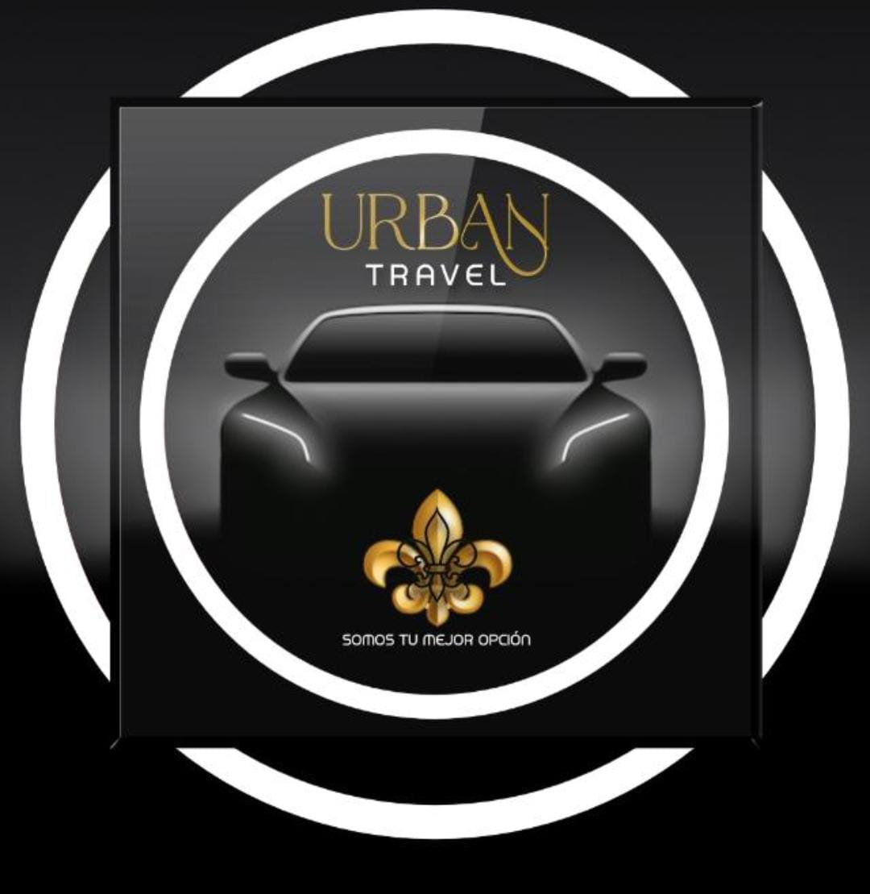

💬
👋 ¡Bienvenido a Urban Travel ! Tu comodidad es nuestra prioridad.

Tu viaje cómodo, seguro y exclusivo
Solicita tu transporte privado en Pereira y alrededores.
Contactar ahora
¿Cómo funciona nuestro servicio?
En Urban Travel , trabajamos bajo un modelo eficiente y personalizado de atención al cliente. Nuestra operación se organiza a través de grupos de WhatsApp , donde nuestros usuarios pueden solicitar un servicio en cualquier momento del dÃa.
1. Ingresa al grupo o escrÃbenos directamente por WhatsApp.2. Comparte tu ubicación y destino.3. Un conductor verificado te recogerá en minutos.4. Viaja con seguridad, comodidad y puntualidad.
Servicios
🚗 Transporte urbano tipo Uber
✈️ Traslados al aeropuerto
🢠Servicio corporativo
🌄 Viajes a municipios cercanos
🶠Transporte con mascotas
Testimonios
"Excelente servicio, me recogieron a tiempo y el conductor fue muy amable."
– Camila G.
"Siempre los uso para ir al aeropuerto. ¡Muy puntuales!"
– David R.
"Me encanta la atención por WhatsApp y lo rápido que responden."
– Julián M.
"El servicio fue impecable, el vehÃculo estaba muy limpio y el conductor fue súper respetuoso."
– Valentina P.
"Urban Travel me ha salvado en más de una ocasión. ¡Siempre están disponibles y llegan rápido!"
– Felipe M.
"Viajar con mi mascota nunca fue tan fácil. ¡Gracias por incluirnos a ambos!"
– Mariana L.
"Lo recomiendo a todos mis compañeros de trabajo. Rápido, seguro y profesional."
– Andrés C.
"Me sentà segura y tranquila durante todo el viaje. ¡Definitivamente volveré a usar Urban Travel!"
– Laura T.
"El conductor conocÃa muy bien la ciudad y evitó todo el tráfico. ¡Un 10/10!"
– Esteban J.
Nuestra Cobertura
📠Nuestro servicio cubre toda el área metropolitana de Pereira, incluyendo:
✔ Pereira
✔ Dosquebradas
✔ Santa Rosa de Cabal
✔ La Virginia
✔ Aeropuerto Internacional Matecaña
Aquà puedes ver nuestra zona de cobertura en el siguiente mapa:
¿Quiénes Somos?
Urban Travel es una empresa pereirana especializada en transporte privado personalizado. Nos enfocamos en ofrecer una experiencia de viaje cómoda, segura y puntual, ideal para quienes valoran la calidad y la atención directa.
Contamos con un equipo de conductores profesionales y verificados, vehÃculos modernos y limpios, y un sistema de comunicación ágil a través de grupos de WhatsApp para coordinar cada servicio al instante.